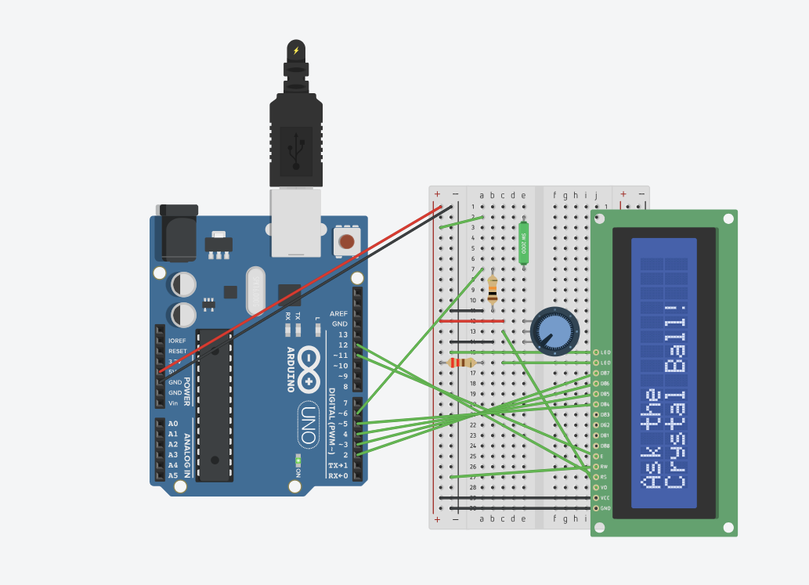
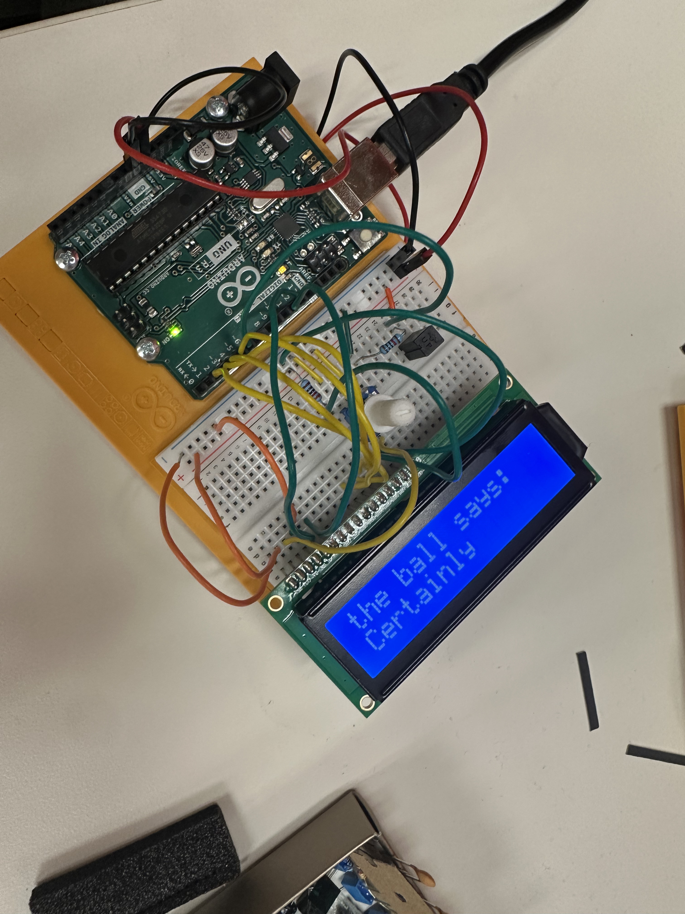

Arduino HW 11 - Crystal Ball
IGME 470
The Crystal Ball assignment is similar to a Magic 8 Ball - it gives a response when shaken. This project was particularly exciting because it was our first time working with an LCD display in the Arduino course.
The crystal ball uses a tilt sensor to detect when it's been shaken, then displays a random response on the LCD screen. The potentiometer is used to adjust the contrast of the LCD display for better viewing.


The parts used:
- 1x Arduino Uno R3
- 1x Tilt Sensor
- 1x 10 kΩ Resistor
- 1x 250 kΩ Potentiometer
- 1x LCD 16 x 2
- 1x 220 Ω Resistor
The circuit works by monitoring the tilt sensor for changes in orientation. When the sensor detects a tilt, the Arduino generates a random message and displays it on the LCD. This project demonstrates important concepts like working with LCD displays, using sensors for input detection, and implementing random number generation to create an interactive fortune-telling device. It was extremely interesting to see how the LCD screen was controlled from setting up each line to actually sending the messages, having to clear the screen each time before displaying a new message and manually go from line to line.